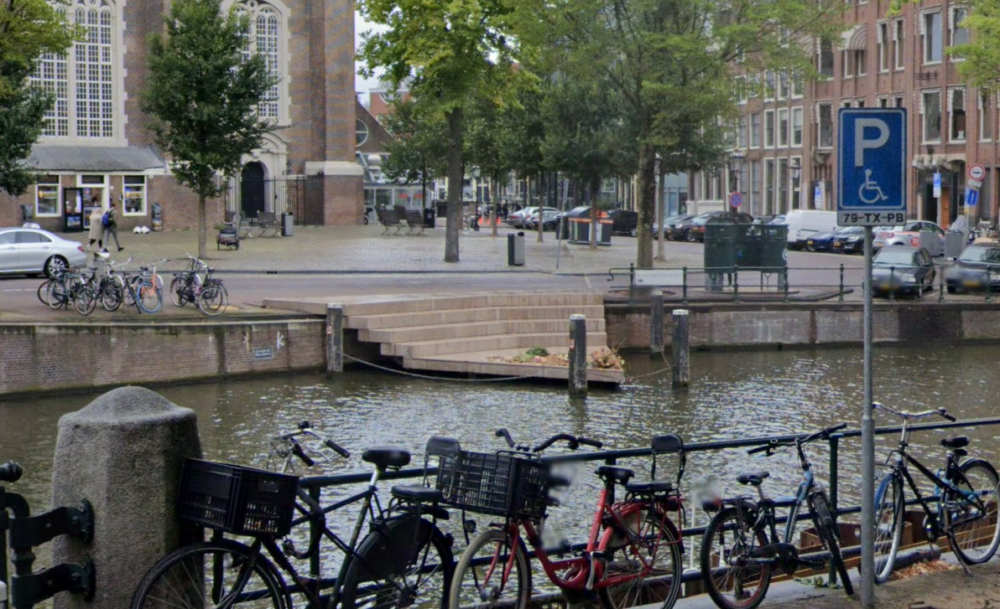

- 
Het homomonument
Het Homomonument is located on Westermarkt. It’s been there since September 5th, 1987 and is there as a memorial for all homosexual men and women who were killed because of their sexuality. It’s also to inspire and support them in their battle for more recognition and against oppression and discrimination. There’s more monuments like this in Den Haag, Utrecht, other cities and places around the world.